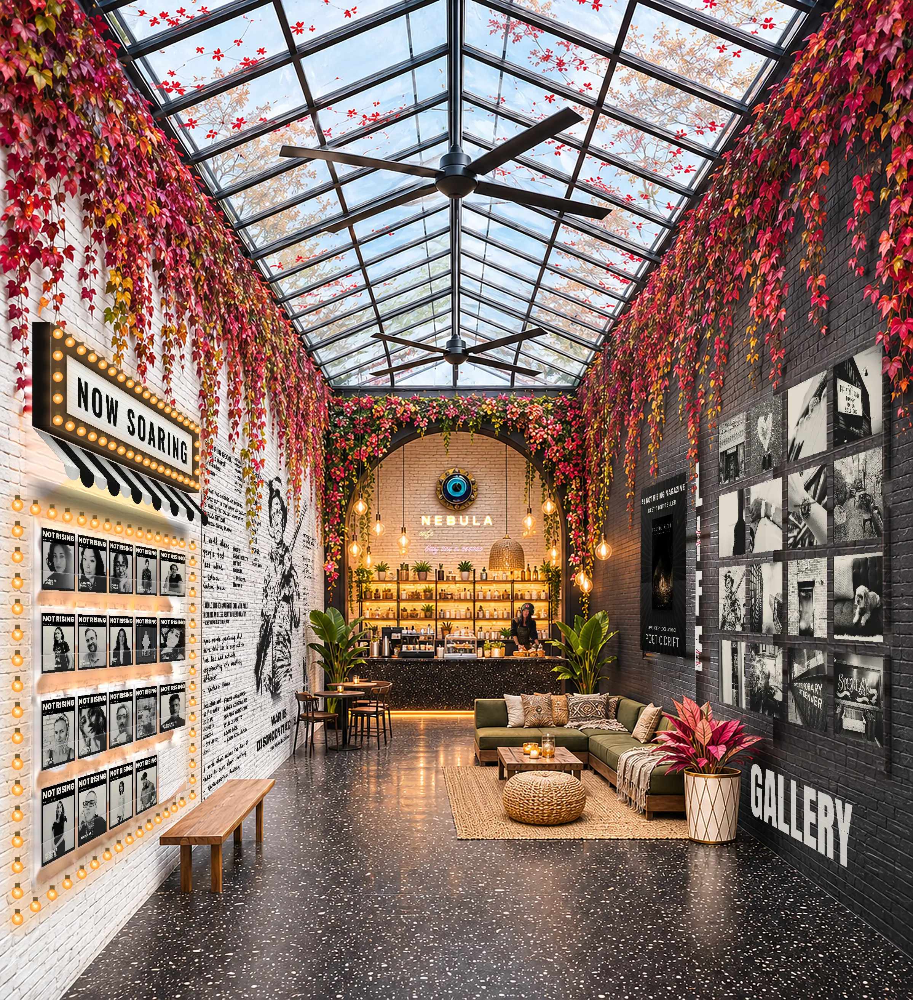
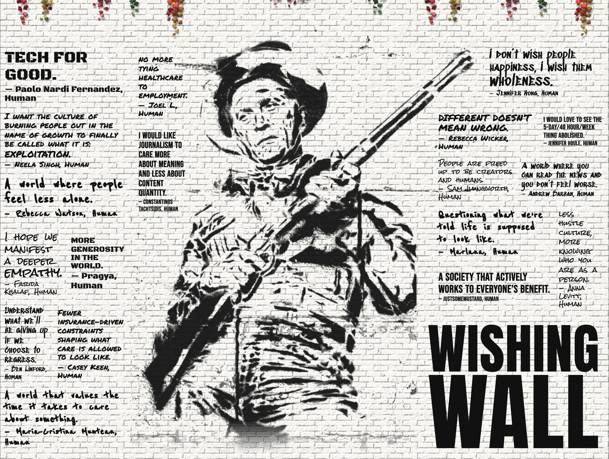
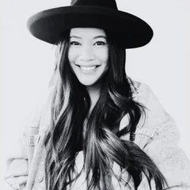

Scroll down

Click the wall to zoom in
Hi, Human!
Tip your barista with a kind word or two.

Chief Absurdist Officer
@chiefabsurdistofficer
Hi, Human is the free discovery engine behind NOT RISING Magazine. I’m Kathi. Everyone here calls me CiAO. I search for the voices being drowned out by the algorithm, and amplify them through word of mouth. Help me find you, Human.
Hi, Human